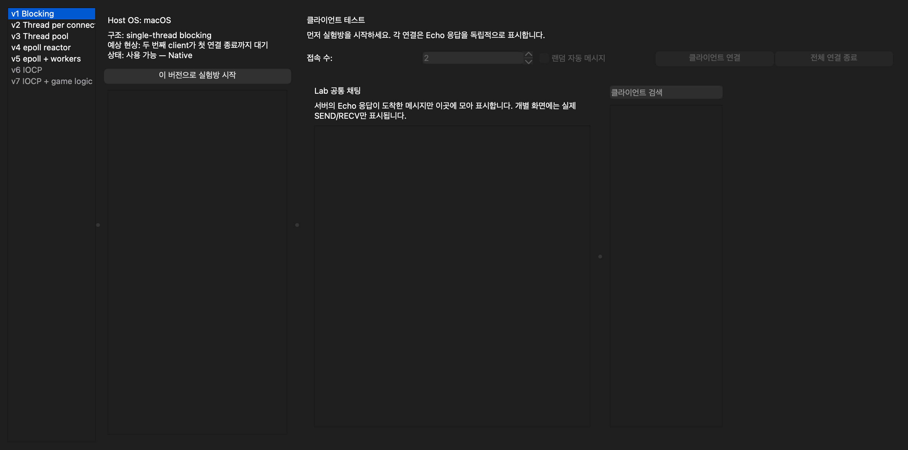
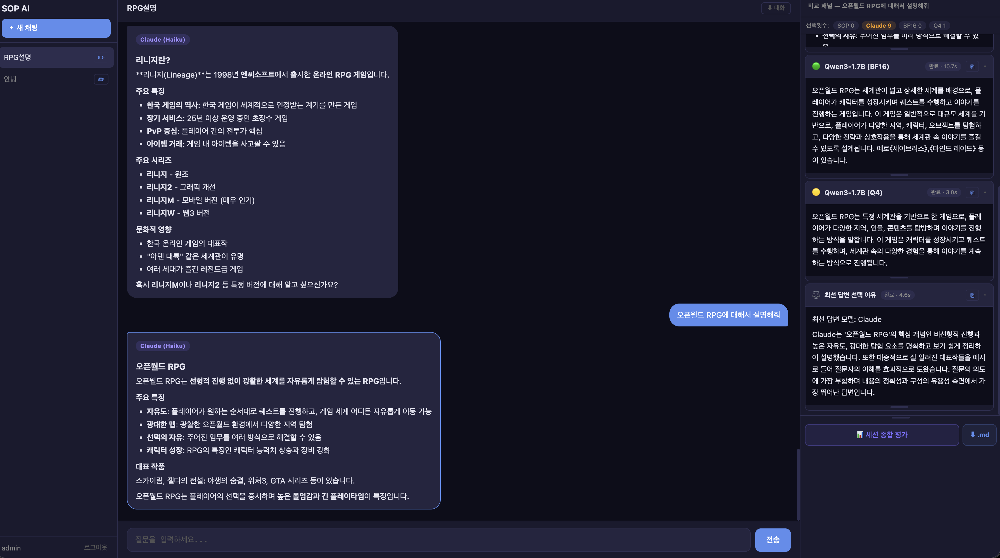

Project List▾
SKYWALK
2024.01 – 2026.02 (2 years 2 months)
5 Projects
▾
CocoMine 2024.12 – 2026.02▾
Genre: Social Networking Service (SNS) · Cozy Life Simulation
- Login bottleneck fix (30s–3min → 10–30s) · Ranking Redis migration (10–20s → 1–2s) · New chat server · Channel distribution logic
- Reduced query latency and login bottlenecks→ While building on the CocoMine Sanrio Characters codebase, identified lagging paths and applied indexing and query optimization, reducing item and ranking data read/update time from 5–15s to 2–6s. In the login flow, reduced contention from locks that blocked the full request and separated independent work for parallel execution. Expanded the DB connection pool and added indexes, cutting login time from 30s–3min to 10–30s.
- Developed chat/plaza/village/district servers for diverse user interactions→ Added village and district servers for new content variety; introduced interactive items, interaction motions, and an address system within the village.
- Redis-based ranking management and game server content development→ Migrated the frequently-queried ranking system to Redis, reducing query time from 10–20s to 1–2s.
- Team collaboration and technical direction review→ Worked as one of two server developers in a team of 2 server · 5 client · 1 UI, handling server-side content development. Coordinated implementation schedules and test plans in team meetings, and reviewed key technical decisions — such as channel distribution and scale-out logic — with the CTO before applying. After the other server developer left mid-project, continued solo; after launch, independently identified and resolved structural issues in the existing codebase.
- Pre-launch load testing via custom bot — bottleneck detection→ Built an automated load-testing bot covering connection, login, and basic gameplay to verify stability before launch. Identified high load on the login, item, and plaza/chat paths, then restructured those areas and reviewed the codebase for lock contention, race conditions, and potential deadlocks.
- On-call incident response — missing event launch · login delays→ Responded to a late-night incident where a planning team event failed to go live; investigation revealed the data had been omitted from the commit. Received the re-committed file and hot-deployed without downtime to restore the event. Also resolved a separate incident where a specific user's excessive item count triggered a lock that delayed all other users' logins — applied indexing and a limit-based mitigation immediately, then redesigned the lock structure as a long-term fix.
- Production data mismatch response and prevention — achievement system→ After adding achievement features and passing staging tests, a data mismatch surfaced in production for users who had already sold or consumed the relevant items, leaving their achievements unprocessable. Analyzed usage logs and transaction history to identify affected users and applied a bulk achievement update to restore correct state. Added more granular edge-case checks to the server-side achievement ingestion logic to prevent recurrence.

CocoMine Sanrio Characters 2024.07 – 2026.02▾
Genre: Social Networking Service (SNS) · Metaverse Community
- Led full administrative system development; improved server performance through data management and optimization
- Built chat and plaza servers for real-time user interaction
- Redis-based ranking management and thread-based session isolation for stability and scalability
- Led full administrative system development; improved server performance→ Designed and built the ASP.NET Core-based administrative page for the operations team, added a BigQuery-powered game currency and item statistics dashboard, and removed redundant or overlapping logic to improve performance.
- Built chat and plaza servers for real-time user interaction→ Extended the solo farming and decorating space into a shared environment where users can chat and see each other's avatars.
- Redis-based ranking management and thread-based session isolation→ Migrated the ranking system to Redis, reducing query time from 10–20s to 1–2s. Also isolated user session handling into separate threads so a delayed request from one user no longer blocks other users' sessions, keeping the server responsive as concurrency grows.

GirlGlobe 2024.04 – 2026.02▾
Genre: Styling Game (Fashion Dress-Up)
- Server maintenance and administrative system feature additions to improve operational efficiency
- Data management and optimization for stable large-scale user data processing
- Performed DB migration from AWS to on-premise server
- Server maintenance and administrative system feature additions→ Tracked intermittent errors, resolved conflicts between legacy code and new content, and added a statistics system and new content management features to the administrative system to help the operations team manage the game more efficiently.
- Data management and optimization→ Fixed poorly optimized queries and added missing indexes, reducing stage-clear item delivery processing time from 10–20s to 2–5s.
- DB migration from AWS to on-premise server→ Performed large-scale data backup and migration as part of a cost-reduction move from AWS to on-premise.

Yumi's Cells 2024.04 – 2026.02▾
Genre: Match-3 Puzzle Game
- Added administrative system features to support efficient game management by the operations team
- Data management and optimization for stable game data processing
- Performed DB migration from AWS to on-premise server
- Added administrative system features for efficient game management→ Added a currency flow statistics system to help the operations team track how in-game currency is used and distributed.
- Data management and optimization→ Consolidated and cleaned up multiple DB columns during a game system overhaul; deployed after thorough testing with no disruption to gameplay.
- DB migration from AWS to on-premise server→ Performed large-scale data backup and migration as part of a cost-reduction move from AWS to on-premise.

Welcome to My Home 2024.01 – 2026.02▾
Genre: SNG · Lifestyle Simulation
- Payment failure rate improvement (4–5/day → 1/1–2 weeks) · MySQL 5.7→8.0 migration · Looker Studio dashboard build
- KR/JP/TW/EN 4-region server maintenance
- Stable service operation across KR/JP/TW/EN 4-region servers→ Tracked down and fixed errors caused by differing content per region; created and continuously updated a content/bug documentation list so other developers could also manage it smoothly.
- Server performance improvement and new content development through data management and optimization→ Applied indexing and query optimization during new content development to ensure features like item systems worked correctly without data duplication.
- MySQL version migration — source code fixes to secure system compatibility and stability→ With MySQL 5.7 reaching end-of-life, an upgrade to 8.0 was required. Identified breaking changes (authentication method, GROUP BY handling, etc.), updated source code, ran thorough testing, and deployed with zero issues.
- Looker Studio data visualization dashboard to improve operations team efficiency→ Connected BigQuery with Looker Studio so game currency and log data could be checked at a glance on the dashboard, directly supporting the operations team's decision-making.
- On-call incident response — Japan server disk-full outage→ Responded to a late-night outage on the Japan server. Running df confirmed the disk was full due to accumulated log files — the crontab-based log cleanup batch had been malfunctioning. Cleared old log files to restore the server, then audited and re-automated the batch job to prevent recurrence.

UXIS
2023.04 – 2023.08 (4 months)
2 Projects
▾
Busan Metropolitan Office of Education Character Education Platform 2023.05 – 2023.07▾
- Implemented administrative pages for both administrators and end users
- Integrated APIs from the education office, integrated reservation system, and booking system
- DB design and push-based notification system development
- Implemented administrative pages for administrators and end users→ Designed and developed separate administrative and user-facing pages with corresponding DB schema based on planning documents.
- API integration for data flow→ Called the existing integrated reservation system API from the education office and connected it to the platform for easy parent access.
- DB design and push notification system→ Designed the DB and built a push notification system to deliver new announcements and alerts directly to users' phones.

Gangwon-do Education Office School Diagnosis System 2023.04 – 2023.05▾
- Developed satisfaction survey system and school self-assessment features
- Fixed runtime errors to improve system stability
- Satisfaction survey and self-assessment features→ Added pages for parents and teachers to create satisfaction surveys, collect results, generate statistics, and export to PDF for administrative use.
- Error fixes for system stability→ Fixed broken or error-prone parts of the existing system, reducing user complaints.

UXIS
2022.01 – 2022.12 (1 year)
4 Projects
▾
Samsung Biologics Partner Portal 2022.10 – 2022.12▾
- Solo development: DB design and full administrative page development
- OKTA SSO & KNOX MAIL API integration for security and usability
- Solo development: DB design and full administrative page development→ Independently developed the backend (excluding design and frontend), designed the DB for both administrative and user-facing pages.
- OKTA SSO & KNOX MAIL API integration→ Integrated Samsung Biologics' required SSO and KNOX MAIL, designed internal/external access separation, and coordinated L4 routing rules with the network team.

PK Valve & Engineering PWA 2022.07 – 2022.10▾
- Led full development as project PM
- Implemented resource management system and QR code recognition
- PWA-based system for mobile resource management
- Led full development as project PM→ Oversaw everything from planning to backend development (excluding design and frontend). Coordinated features and timelines with PK Valve staff.
- QR code recognition for resource management→ Built a mobile QR scan feature to instantly retrieve equipment information, making asset management more efficient.
- PWA-based system for mobile access→ Built as a PWA so users can access it like a native app on mobile without downloading from an app store.

Chungcheongbuk-do Education Office HR System 2021.12 – 2022.07▾
- Replaced manual paper/Excel scoring for 6,400–10,000 staff transfers with score-based automated algorithm · tie-breaking logic
- Developed HR records, performance evaluation, survey, and statistics features
- Replaced manual paper/Excel scoring for 6,400–10,000 staff transfers with score-based automated algorithm→ Previously each person had to manually score and consolidate data through many steps. By automating the process, personnel transfer decisions became much faster. There was no longer a need to verify the process every time a score was assigned.
- Developed HR records, performance evaluation, survey, and statistics features→ The statistics feature made it possible to see which departments have the most transfers and which are most preferred. HR records that were previously stored in physical documents were consolidated into a single system for instant lookup.

Udeserve 2022.05▾
- Developed favorites feature and user-facing pages
- Developed announcements and 1:1 inquiry features
- Favorites and user-facing page development→ Developed the community page favorites feature and portions of the user-facing content pages.
- Announcements and 1:1 inquiry features→ Developed an announcements page and 1:1 inquiry system within a tight deadline, reducing the burden on the overall site development.

UXIS
2021.03 – 2021.12 (10 months)
4 Projects
▾
BetterOn 2021.08 – 2021.12▾
- Solo development: video conferencing system and DB design
- TURN server setup
- Developed participant focus analysis algorithm using eye tracking
- Solo development: video conferencing system and DB design→ Built a remote communication system in Node.js enabling teachers and students to use chat, video, and audio like a real classroom. Designed the DB for chat history and access logs.
- TURN server setup→ Used WebRTC and ICE framework for direct connection attempts; on failure, routed through a TURN server. Repeated failures were treated as network latency and handled as connection failures.
- Focus analysis algorithm via eye tracking→ Used Mediapipe to track eye positions, measuring deviation from baseline gaze as a median over intervals. Sustained deviation beyond a threshold reduced the focus score.

Busan·Ulsan·Gyeongnam Online Job Fair 2021.08 – 2021.12▾
- Operated video consultation and interview system for job seekers, interviewers, and counselors
- Adapted existing video conferencing solution for job fair environment
- Video system for job seekers, interviewers, and counselors→ Restructured BetterOn's classroom-oriented design for interviewer/interviewee and job seeker/counselor flows; added file attachment for document sharing.
- Adapted for job fair environment→ Logged all chat history and participant records for institutional requests. Added a mirror preview before entering sessions and a Mediapipe-based posing feature to help participants feel at ease.

Today's Ramyeon 2021.05 – 2021.07▾
Ramen Recipe and Subscription Web Service
- Developed user main page, subscription and gifting features
- Developed FAQ feature for customer support efficiency
- User main page, subscription and gifting→ Implemented the home page, subscription feature, and a gifting system allowing subscribers to send gifts to each other.
- FAQ feature for customer support→ Built an FAQ and inquiry page as a customer communication channel.

DRIZ 2021.03 – 2021.07▾
- Developed full administrative page for store and order management
- Developed user-facing app for intuitive ordering and delivery experience
- Administrative page for store and order management→ First project at the company. Built administrative features for managing store menus and information, and monitoring order status.
- User-facing app for ordering and delivery→ Developed in React Native with live previews; built order history and delivery status tracking for users.

ETC
Personal Projects · KakaoTech Bootcamp
4 Projects
▾
C++ Network Game Server Learning Project 2026.07 – Present▾
A step-by-step server architecture lab that compares connection handling from v1 through v6 in one GUI
GitHub- Progressed from a single-client server to multi-client, thread-pool, Linux epoll, and Windows IOCP implementations
- Implemented partial sends, message ordering, safe connection teardown, and graceful server shutdown
- Unified server launch and multi-client real-time, delayed, and repeated messaging in one GUI
- Processed 28,000 concurrent connections and 560,000 messages on Linux; processed 2,000 burst connections and sustained 12,000 connections with 120,000 messages on Windows IOCP
- Expanded connection handling step by step→ Started with a server that handles one client at a time, then implemented thread-per-connection, reusable thread pools, Linux epoll, and Windows IOCP. Each version addresses a limitation found in the previous one.
- Handled data transfer and shutdown safely→ Added partial-send handling and per-client send queues to preserve message order when large payloads cannot be sent in one write. Also defined a safe shutdown sequence for active work and threads.
- Verified results with load tests and automated checks→ The Linux server processed all 560,000 messages with 28,000 concurrent connections inside a Docker network. At 30,000 attempted connections, the client-side ephemeral port range was exhausted first; all messages from the 28,231 established clients were processed. The Windows IOCP Debug build completed 20,000/20,000 Echo responses at 2,000 burst connections and maintained 12,000 connections while completing 120,000/120,000 Echo responses when connection concurrency was limited to 64. From 2,500 burst connections, backlog 128 and 16 pending AcceptEx calls could not absorb the full spike, causing some refusals. Every test completed pending I/O draining and exited with code 0. Console output was redirected to NUL during measurement to prevent stdout from becoming the bottleneck.
- Built a cross-platform GUI for comparing server designs→ The GUI launches any server version, connects up to 200 clients for interactive testing, sends individual, delayed, or repeated messages, and aggregates Echo responses. It detects which versions can run on the host OS, selects Native or Docker execution, and builds missing binaries with CMake.

Kakao Terms RAG Performance Challenge 2026.08.11 – 2026.08.13▾
A RAG system that answers questions about Kakao terms with supporting clauses, plus an answer-evaluation tool
GitHub- Combined keyword and semantic retrieval to find relevant terms and clauses more accurately
- Built an end-to-end RAG pipeline for Colab T4, from document preparation and indexing to answer generation
- Scored 93.915 in the official practice evaluation, improved the baseline by 5.724 points, and advanced to the Top 5 among 17 teams
- Improved evidence retrieval by combining keyword and semantic search→ Combined BM25, which is strong at exact terms and numbers, with BGE-M3 semantic retrieval through RRF. Removed duplicate results and supplied the answer model with the most relevant source text so numeric conditions and exceptions were less likely to be omitted.
- Built an answer and evaluation pipeline for a limited GPU environment→ Quantized Qwen2.5-7B-Instruct to 4-bit and prepared the terms data, search indexes, and FastAPI service in one Colab notebook. A separate Gemini-based evaluator checked candidate answers and returned scores in a fixed JSON schema.
- Raised the score to 93.915 through controlled experiments→ Changed one variable at a time, including stronger evidence emphasis, recovery of omitted source passages, and duplicate removal, while recording results and selection reasons. The official practice evaluation reached MRR 1.0000, Key Fact F1 0.8080, LLM Judge 99.350, and a total score of 93.915, a 5.724-point gain over the initial baseline and a Top 5 finish among 17 teams.
RPG & Game-Specialized Korean Mini-GPT Chatbot 2026.05 – On Hold▾
KakaoTech Bootcamp Deep Dive · GPT Architecture from Scratch + Qwen3 Local LLM + RAG / LangChain / LangGraph / Claude API
GitHub- Designed GPT (~97M params) & jamo-unit BPE tokenizer from scratch; completed multi-stage training (continuation → QA → span → DPO)
- BM25+FAISS hybrid RAG + LangGraph 4-graph pipeline / Qwen3-1.7B local LLM in BF16 & GGUF Q4_K_M modes
- Claude Haiku auto question classification routing + 4-panel real-time comparison UI, FastAPI + SSE streaming
- GPT (~97M params) & jamo-unit BPE tokenizer from scratch + multi-stage training→ Implemented a tokenizer that decomposes Korean via NFD into jamo units and applies BPE. Designed a GPT decoder (CausalSelfAttention + MLP(GELU) + Pre-norm) from scratch, and built a staged training pipeline on kowikitext + AI Hub data: continuation → QA fine-tuning → span extraction → DPO preference learning, with bf16 mixed precision and cosine LR decay.
- BM25+FAISS hybrid RAG + LangGraph 4-graph pipeline / Qwen3-1.7B local LLM in two modes→ Upgraded from TF-IDF to a BM25+FAISS hybrid retriever, improving routing accuracy from 73.3% to 82.7%. Built 4 LangGraph StateGraphs (SOP_GPT / Claude / Qwen BF16 / Qwen Q4) using a node factory pattern. Integrated Qwen3-1.7B as both BF16 via Transformers+MPS and GGUF Q4_K_M via llama-cpp — benchmarked on 100 KorQuAD questions, Q4_K_M was 3.3× faster with <2%p accuracy gap.
- Claude Haiku auto routing + 4-panel comparison UI + FastAPI SSE streaming→ Claude Haiku classifies each question into casual / factual / general and routes it to the appropriate chain automatically. All 4 models (SOP_GPT · Claude · Qwen BF16 · Qwen Q4) stream responses simultaneously in a 4-panel UI via FastAPI + SSE. Login secured with PBKDF2-HMAC-SHA256; conversation context persisted across sessions via LangGraph MemorySaver (short-term) + JSON files (long-term).

Giftie · AI Hackathon 2026.08.18 – 2026.08.21▾
An AI relationship-management service that records gifts and cash contributions and recommends when, what, and how to reciprocate
GitHub- As PM, defined the service scope and FE, BE, AI, and cloud responsibilities while coordinating schedules and API integration
- Designed the initial AI service structure that normalizes manually entered and image-extracted gift information into one data model
- Built an MVP in four days and advanced to the Top 8 among 20 teams
- Designed the initial AI service and data flow→ Normalized gift information from manual input and images into one shared format, then separated the flow into records, calendar entries, notifications, and return-gift recommendations. A common input contract let teammates implement features independently.
- Aligned FE, BE, and AI development as PM→ Divided responsibilities among frontend, backend, and AI services and documented the order in which data moves through them. Reviewed implementation status and API request and response formats, then resolved mismatched assumptions by restating and sharing the agreed rules.
- Defined the deployment and cloud architecture→ Chose Vercel for the frontend, AWS EC2 for backend and AI services, and MySQL plus S3 for data. The frontend calls only the backend, which connects to the AI service, keeping service boundaries clear.
- Completed a four-day MVP and reached the Top 8→ The team delivered a working demo with login, gift records, per-person history, calendar, notifications, and AI-powered reciprocation recommendations. Giftie advanced to the Top 8 among 20 teams.